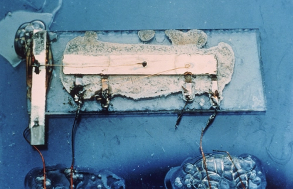

Historia de los procesadores
Los procesadores son uno de los componentes más importantes de cualquier dispositivo electrónico moderno, desde computadoras y teléfonos inteligentes hasta electrodomésticos y automóviles. La historia de los procesadores comienza en la década de 1940, cuando los científicos comenzaron a desarrollar los primeros sistemas de cómputo electrónicos.
En esa época, los sistemas de cómputo eran enormes y ocupaban una habitación entera. Estos sistemas utilizaban tubos de vacío para procesar datos, y eran extremadamente lentos y propensos a fallas. En la década de 1950, los científicos comenzaron a desarrollar transistores, que eran mucho más pequeños y confiables que los tubos de vacío. Estos transistores formaban la base de los procesadores modernos.
En 1958, Jack Kilby, de Texas Instruments, desarrolló el primer circuito integrado, que combinaba varios transistores en un solo chip de silicio. Esto permitió la creación de dispositivos electrónicos mucho más pequeños y eficientes, y allanó el camino para la creación de los primeros procesadores.

Primer circuito integrado de la historia.
En 1971, Intel lanzó el primer microprocesador, el Intel 4004. Este procesador tenía solo 2,300 transistores y era capaz de realizar alrededor de 60,000 operaciones por segundo. A pesar de sus limitaciones, el 4004 fue un gran avance en la tecnología de procesadores, y allanó el camino para la creación de procesadores más poderosos en el futuro.
Intel 4004. Primer microprocesador de la historia.
A medida que la tecnología de procesadores continuó avanzando, los procesadores se volvieron más pequeños y más poderosos. En la década de 1980, Intel lanzó el procesador Intel 8086, que fue el primer procesador de 16 bits, capaz de procesar datos a una velocidad de 5 MHz. Este procesador fue un gran éxito y se utilizó en muchos de los primeros ordenadores personales.
En la década de 1990, los procesadores continuaron mejorando, y se introdujeron los primeros procesadores de 32 bits. Estos procesadores eran aún más potentes que los procesadores de 16 bits anteriores, y permitieron la creación de sistemas operativos y aplicaciones más avanzados.

i386. Primer procesador de 32 bits de la historia
En la década de 2000, los procesadores se volvieron aún más poderosos, y comenzaron a aparecer los primeros procesadores de múltiples núcleos. Estos procesadores tenían varios núcleos, lo que les permitía procesar varias tareas al mismo tiempo, lo que los hacía ideales para aplicaciones multitarea como la edición de video y la renderización en 3D.
Hoy en día, los procesadores continúan mejorando, y se utilizan en una amplia variedad de dispositivos, desde teléfonos inteligentes y tabletas hasta servidores y supercomputadoras. Los procesadores modernos tienen miles de millones de transistores, y son capaces de procesar datos a velocidades increíblemente rápidas. A medida que la tecnología continúa avanzando, es probable que veamos procesadores aún más poderosos y eficientes en el futuro.
Arquitectura de los procesadores
La arquitectura de microprocesadores se refiere al diseño interno de un microprocesador, que es la unidad central de procesamiento (CPU) de una computadora. La arquitectura de un microprocesador determina cómo se procesan y ejecutan las instrucciones, cómo se maneja la memoria, cómo se accede y se transfieren los datos y cómo se comunica con otros componentes del sistema.

Arquitectura RISC
Esta arquitectura utiliza un conjunto reducido de instrucciones, lo que la hace más eficiente en términos de velocidad y consumo de energía. Los procesadores con arquitectura RISC suelen estar diseñados para tareas específicas y se utilizan comúnmente en dispositivos móviles y sistemas embebidos.
Arquitectura CISC
Esta arquitectura utiliza un conjunto más amplio de instrucciones, lo que permite procesar operaciones más complejas. Los procesadores con arquitectura CISC se utilizan comúnmente en computadoras personales y servidores.
Arquitectura x86
La arquitectura x86 es una arquitectura de microprocesadores CISC (Complex Instruction Set Computing) que se utilizó inicialmente en las primeras computadoras personales y se ha mantenido como una de las arquitecturas más populares para las CPUs de computadoras personales y servidores. Los procesadores x86 utilizan una amplia variedad de instrucciones, lo que les permite procesar operaciones complejas. Los procesadores x86 se han utilizado en una amplia variedad de sistemas operativos y programas de software, lo que los hace compatibles con una gran cantidad de software.
Arquitectura x64
La arquitectura x64 es una extensión de la arquitectura x86 que permite procesar instrucciones de 64 bits. La arquitectura x64 se utilizó por primera vez en los procesadores AMD Opteron en 2003 y se hizo popular con el lanzamiento de los procesadores Intel Core 2 en 2006. Los procesadores x64 permiten una mayor cantidad de memoria RAM y un mayor rendimiento en aplicaciones de alta demanda de recursos, como edición de video, diseño gráfico y juegos. La mayoría de los sistemas operativos modernos y programas de software se han adaptado para ejecutarse en procesadores x64.
Una de las principales ventajas de la arquitectura x64 sobre la arquitectura x86 es la capacidad de procesar grandes cantidades de datos en un solo ciclo de reloj, lo que mejora el rendimiento y la velocidad de la CPU. Además, la arquitectura x64 permite una mayor cantidad de registros de procesador, lo que permite una mayor eficiencia en el manejo de datos y operaciones complejas. La arquitectura x64 también tiene una mayor cantidad de instrucciones de procesamiento SIMD (Single Instruction Multiple Data), lo que permite un procesamiento de datos en paralelo para mejorar el rendimiento en aplicaciones de gráficos y multimedia.

Procesador AMD de 64 bits.